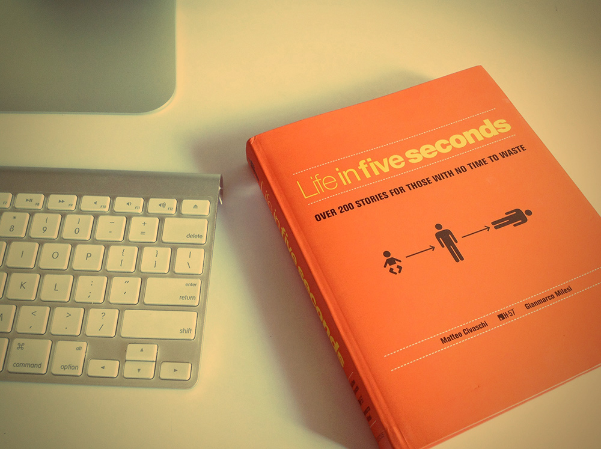

Easy & Proven Way to Build Good Habits & Break Bad Ones
No matter your goals, Atomic Habits offers a proven framework for improving--every day. James Clear, one of the world's leading experts on habit formation, reveals practical strategies that will teach you exactly how to form good habits, break bad ones, and master the tiny behaviors that lead to remarkable results.
Atomic Habits will reshape the way you think about progress and success, and give you the tools and strategies you need to transform your habits--whether you are a team looking to win a championship, an organization hoping to redefine an industry, or simply an individual who wishes to quit smoking, lose weight, reduce stress, or achieve any other goal
If you're having trouble changing your habits, the problem isn't you. The problem is your system. Bad habits repeat themselves again and again not because you don't want to change, but because you have the wrong system for change. You do not rise to the level of your goals. You fall to the level of your systems. Here, you'll get a proven system that can take you to new heights.Learn how to:
* make time for new habits (even when life gets crazy);
* overcome a lack of motivation and willpower;
* design your environment to make success easier;
* get back on track when you fall off course;
...and much more.
Inclusive Design Patterns
Pickering is a well-known web accessibility expert & recently he published a book with Smashing Magazine by the name "Inclusive Design Patterns". People accessing web have different abilities & needs, use different tools to access the content on websites. The book looks at patterns that enhance the accessibility of our Interfaces and make them Inclusively Designed.
Physical Quality of this hardback book feels absolutely sturdy with the high-quality pages; and like Smashing Book #5, the book contains an orange bookmark stitched to its spine. Every Print order is accompanied with an ebook version in EPUB, PDF and MOBI formats.
The topic of accessibility could be very dull and boring. The author, Heydon makes sure to keep his readers engrossed and entertained with his witty and skillful writing and his whimsical stick figure adventures.
Some of the patterns in the book talk about alternative methods and ways of achieving a design solution keeping accessibility in mind. One of the patterns is avoiding repetitions where ever possible. We usually have 2 links that link to the homepage in the section/tag of our website, one being the logo link and the other one in the navigation. He proposes that the logo should be placed inside the home-page link of
Hegarty On Creativity
There are no rules to creativity. Yet, there are many people who earn their living through it. What fosters creativity? Is it a skill that can be nurtured? Or is it a talent?
The book gives guidelines that nurtures, sustains, and harness a reader's creative skills.
The book astutely starts with a strong message on creativity: "There are no rules," with each word printed on separate pages.
Being aware, sensitive, passionate, concerned, committed, and above all inventive are necessary ingredients for a successful creative career.
Ideas:: We get ideas every day and they are one of the most profound products that we, as humans, generate.
Foundation of any great idea is the truth, which is the most powerful force in creativity.
Ideas borrow, blend, subvert, develop, and bounce over other Ideas. There is no such thing as originality. Try to be Fresh rather than original.

Life in Five Seconds
The book beautifully symbolizes concepts, people’s lives, movies etc. using series of icons. On the cover of the book, “Life” itself is described in a very unique way: Baby – Youth – Death.
Threre is an augmented reality App,available on both AppStore and Andriod , bringing images to life.
I would have given this book a 10/10, if the authors would have provided an index and a short description of the topic, in case if the readers are unable to figure out the intended meaning of the illustrations. This would have helped in case they do not understand the topic. For instance, what if you have no idea about Lord of the Rings and you come across this illustration?